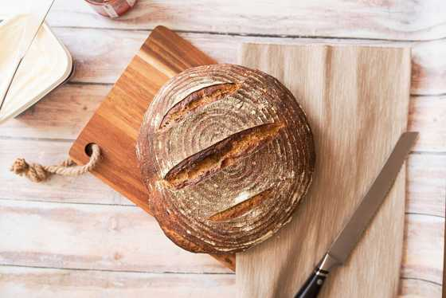
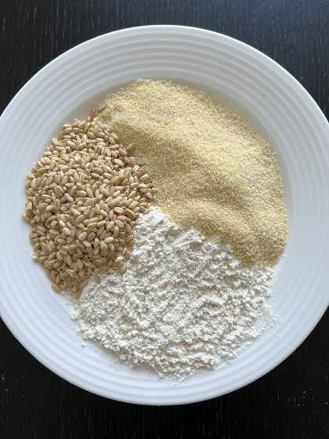
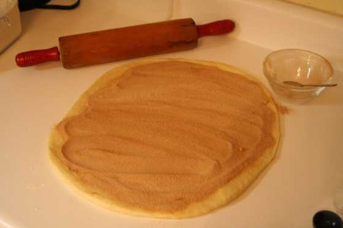
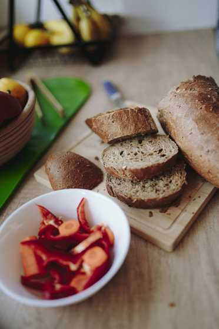
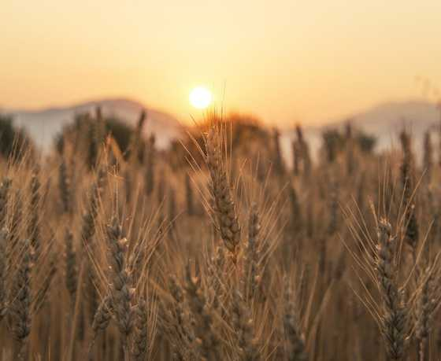
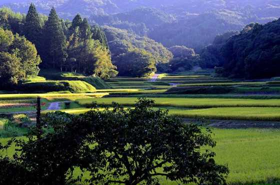
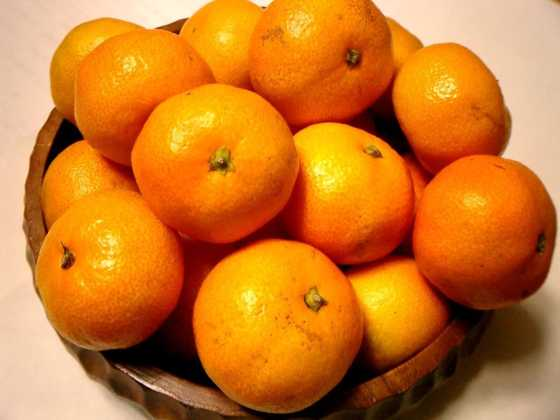

ちいさいパン屋 クボサンチ
田園の水色の小さな建物で、国産小麦をていねいに手でこねたパンを。

電話は準備中Instagramを見る
掲載写真はフリー素材のイメージ写真で、店舗の実際の商品・店内・風景ではありません。他の地域で撮影されたものや撮影地が不明なものを含みます。
口コミ(イメージ例)
以下は口コミ欄のイメージとして制作側が作った例文で、実際のお客様の声ではありません。
イメージ例
素朴でやさしい味のクリームパンでした。ドライブの途中に立ち寄ってよかったです。
イメージ例
食パンがふんわりもちもち。次は予約してから行こうと思います。
イメージ例
田んぼの景色の中の小さなお店で、のんびりした気持ちでパンを選べました。
お店について
お店は三重県南牟婁郡御浜町下市木にあり、田園風景の中の水色の建物が目印です。七里御浜や国道42号からは車で約2分と紹介されています。2020年1月25日のオープンで、同年2月の地元紙には「Uターンで夢をつかむ」「地域に愛される店目指す」という見出しで取り上げられました(記事本文は未確認)。
店名の意味やオーナーの想いについては、確認できた情報がないため、ここでは触れていません。






アクセス
- 住所
- 〒519-5203 三重県南牟婁郡御浜町下市木3392-4
- 電話
- 準備中
- 最寄り
- 紀勢本線 紀伊市木駅から徒歩約14分/国道42号から車で約2分(駐車場は2台程度との情報)
- @kubo.sanchi